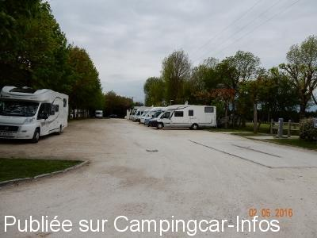
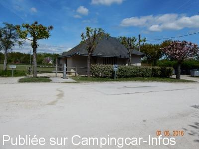
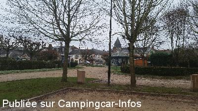
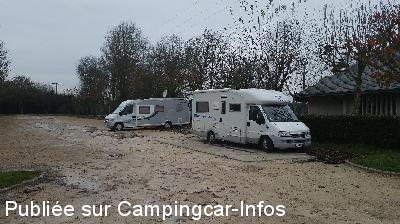
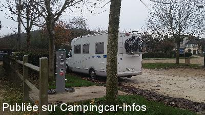
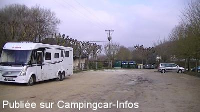

ASN = Aire de services avec stationnement nuit possible de :
VILLANDRY
(N° 417)
Accès/adresse :
Allée Coleman Carvallo
37510 VILLANDRY
37510 VILLANDRY
Latitude : (Nord) 47.34138° Décimaux ou 47° 20′ 28′′
Longitude : (Est) 0.51097° Décimaux ou 0° 30′ 39′′
Tarif : 2015
Vidanges, eau : 2 €
Paiement par carte bancaire
Type de borne : URBAFLUX
Services :


Aire de pique-nique.
Autres informations :
Ouvert toute l'année
30 emplacements sur terre battue, éclairés, ombragés.
Borne hors service en hiver.
http://www.villandry.fr/
Château accessible à pied

Le 05/05/2016 par pirate28

Le 05/05/2016 par pirate28

Le 28/12/2015 par Gege27

Le 28/12/2015 par Gege27

Le 28/12/2015 par Gege27

Le 01/03/2013 par damaham
de
pirate28
le 05/05/2016 :
bonjour.
aire très bien,donc très prisée.il faut arriver tot pour avoir une place.une nuit passée très calme,a part
les grenouilles très présentes dans le coin.
bonjour.
aire très bien,donc très prisée.il faut arriver tot pour avoir une place.une nuit passée très calme,a part
les grenouilles très présentes dans le coin.
de
Gege27
le 28/12/2015 :
Le 23/11/2015
Effectivement, c'est un vaste parking avec une aire de service. A cette époque nous n 'étions que 2, mais en saison ce ne doit pas être pareil. Très proche du château et de la boulangerie, a priori ouverte 7/7 jours. Il y a aussi un distributeur de produits frais, legumes, fruits, soupes .. Par contre pour la prise d'eau, c'est un raccord spécial, plutôt rare car jamais vu et donc par dans le CC.
Le 23/11/2015
Effectivement, c'est un vaste parking avec une aire de service. A cette époque nous n 'étions que 2, mais en saison ce ne doit pas être pareil. Très proche du château et de la boulangerie, a priori ouverte 7/7 jours. Il y a aussi un distributeur de produits frais, legumes, fruits, soupes .. Par contre pour la prise d'eau, c'est un raccord spécial, plutôt rare car jamais vu et donc par dans le CC.
de
Alain & Nicole
le 27/07/2015 :
parking très bien pour visiter le château mais très poussiéreux
attention car des habitants viennent garer leurs camions sur ce parking et repartent de bonnes heures reveil matinal !!!
parking très bien pour visiter le château mais très poussiéreux
attention car des habitants viennent garer leurs camions sur ce parking et repartent de bonnes heures reveil matinal !!!
de
Mataf59
le 13/07/2015 :
De passage en Juin: Parfait pour visiter le Château. très boueux par temps de pluie. Pas d'emplacements délimités, par conséquent, ne pas prendre ses aises.....
De passage en Juin: Parfait pour visiter le Château. très boueux par temps de pluie. Pas d'emplacements délimités, par conséquent, ne pas prendre ses aises.....
de
Paul Guntz
le 06/10/2014 :
De passage le 16/09/14 - Bonjour,
Aire parfaite à 100 m du château. Seul "inconvénient": le raccord de la borne de service pour prendre de l'eau. Il faut avoir la bonne pièce (Gardéna), mais en principe, chaque camping-cariste devrait en disposer. Mais là où le bât blesse, c'est le système lui-même. Dépourvu de robinet, l'eau commence à couler (fort)à partir du moment où l'on a terminé le paiement. Et le jet ne s'arrête qu'à l'épuisement de la quantité d'eau dévolue. Une fois le réservoir rempli, que faire du reste? Arroser le c-c ou les environs ? A moins de vouloir débrancher le tuyau : mais là, c'est la douche intégrale garantie !!! Avis aux amateurs...
De passage le 16/09/14 - Bonjour,
Aire parfaite à 100 m du château. Seul "inconvénient": le raccord de la borne de service pour prendre de l'eau. Il faut avoir la bonne pièce (Gardéna), mais en principe, chaque camping-cariste devrait en disposer. Mais là où le bât blesse, c'est le système lui-même. Dépourvu de robinet, l'eau commence à couler (fort)à partir du moment où l'on a terminé le paiement. Et le jet ne s'arrête qu'à l'épuisement de la quantité d'eau dévolue. Une fois le réservoir rempli, que faire du reste? Arroser le c-c ou les environs ? A moins de vouloir débrancher le tuyau : mais là, c'est la douche intégrale garantie !!! Avis aux amateurs...
de
celor
le 04/11/2013 :
Aire très calme et la carte bleue fonctionnait. Cependant, le raccord n'est pas pratique pour prendre de l'eau, il faut avoir le bon !!
Aire très calme et la carte bleue fonctionnait. Cependant, le raccord n'est pas pratique pour prendre de l'eau, il faut avoir le bon !!
de
jami26
le 07/09/2013 :
Aire calme et pratique sur ce parking immense où pas moins de 50 CC y stationnaient le 13 août 2013. Par contre la carte bleue ne fonctionnait pas et personne n'a pu prendre de l'eau.
Aire calme et pratique sur ce parking immense où pas moins de 50 CC y stationnaient le 13 août 2013. Par contre la carte bleue ne fonctionnait pas et personne n'a pu prendre de l'eau.
de
Bertrand
le 08/08/2013 :
Arrêt début et fin juillet sur cette aire toujours très calme. Les croissants du matin sont justes en face et sont très bons. La visite du château est à faire.
Arrêt début et fin juillet sur cette aire toujours très calme. Les croissants du matin sont justes en face et sont très bons. La visite du château est à faire.
de
DAMAHAM
le 01/03/2013 :
Toujours aussi calme et pratique.
Rien à dire aux niveau des services.
Très bien à cette époque, Février 2013.
Toujours aussi calme et pratique.
Rien à dire aux niveau des services.
Très bien à cette époque, Février 2013.
de
Rémy Fruchard
le 08/07/2012 :
Nous y avons passé la nuit du 6 au 7 juillet 2012 après la visite du château et du spectacle nocturne avec feu d'artifice. Le parking était plein de CC et de voitures (il faut partager). La nuit a été calme. La boulangerie se trouve à 100m, parfait pour la baguette du petit déjeuner.
Nous y avons passé la nuit du 6 au 7 juillet 2012 après la visite du château et du spectacle nocturne avec feu d'artifice. Le parking était plein de CC et de voitures (il faut partager). La nuit a été calme. La boulangerie se trouve à 100m, parfait pour la baguette du petit déjeuner.
de
louis aladar
le 06/06/2012 :
passé week-end du 13 mai 2012
grand parking plat ombragé
étions un douzaine de c-car
passé la nuit très calme
passé week-end du 13 mai 2012
grand parking plat ombragé
étions un douzaine de c-car
passé la nuit très calme
de
titite35
le 30/08/2011 :
§
En fait le stationnement n'est pas réservé uax camping-car donc en période estivale c'est un peu chaud pour se garer dans la journée
Les services vidange + plein d'eau sont à 2 euros par carte
§
En fait le stationnement n'est pas réservé uax camping-car donc en période estivale c'est un peu chaud pour se garer dans la journée
Les services vidange + plein d'eau sont à 2 euros par carte
de
nicole et Michel
le 28/07/2010 :
Nous avons passé une nuit, avec 27 CC, très calme. Parking en travaux, aire de services en construction qui sera sûrement très bien. Parfait pour visiter le Chateau et ses jardins le lendemain matin (à ne pas manquer, SUPERBE). Merci pour cet accueil !
Nous avons passé une nuit, avec 27 CC, très calme. Parking en travaux, aire de services en construction qui sera sûrement très bien. Parfait pour visiter le Chateau et ses jardins le lendemain matin (à ne pas manquer, SUPERBE). Merci pour cet accueil !
de
Philippe
le 11/05/2009 :
Grand parking plat à partager avec les voitures, nuit paisible, boulanger à proximité, merci à la commune.
Grand parking plat à partager avec les voitures, nuit paisible, boulanger à proximité, merci à la commune.